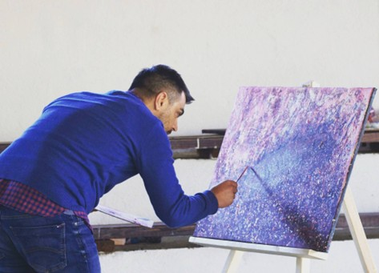

Masličić Irvin
Radi slike s temom podvodnog svijeta: jata riba, grebeni, morsko i riječno dno; često koristi reljef i školjke.
Detaljne biografije i radovi — Klikni na karticu za više detalja i galeriju.
Radi slike s temom podvodnog svijeta: jata riba, grebeni, morsko i riječno dno; često koristi reljef i školjke.
U fokusu rada je boja; jaki kontrasti i geometrijski slojevi stvaraju lebdeći prostor i novu dubinu.
Slika figure i dijelove ljudske figure, ali i apstraktne forme, uz detalje tradicije i kulturnog nasljeđa.
Posvećena slikanju portreta, posebno dječjih lica; nastoji autentično prikazati njihova osjećanja i doživljaje.
Motiv: ženski portreti s crnim konturama; kritika konzumerizma i trke za ljepotom kroz modernu estetiku.
Radi asocijativne pejzaže jarkih boja i smjelih kombinacija; boja je njeno osnovno izražajno sredstvo.

Grafički dizajn, brendiranje, plakati i klasično slikarstvo; dugogodišnje iskustvo kao umjetnički direktor.

Motivi vezani za zavodljivi ženski svijet; moderne figure i jark kolorit koji naglašava senzibilitet i ženstvenost.
Upotrebljava raskošne nijanse žute, crvene i zelene; slikarsko djelo je često bogato bojom i senzibilitetom.
Bavi se tipografijom, layoutom i pismom; radi na dizajnu za edukaciju i gradske sisteme signalizacije.